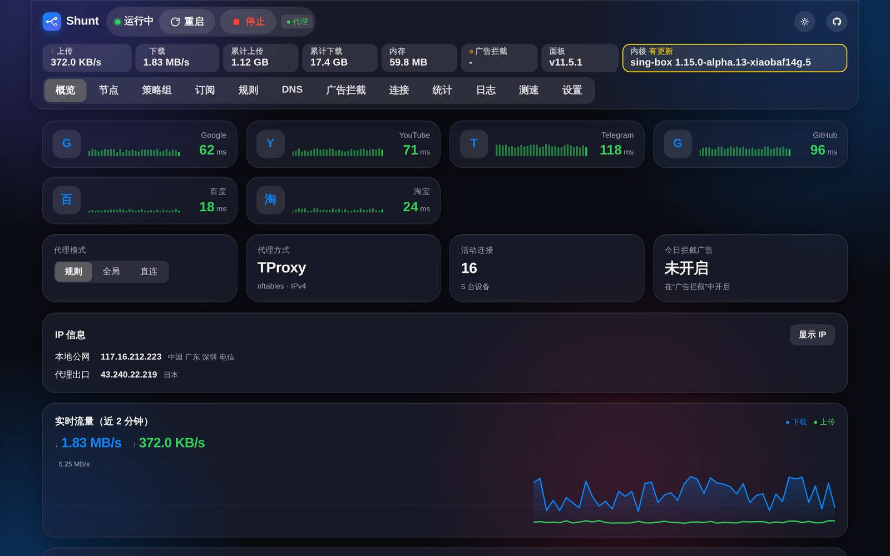
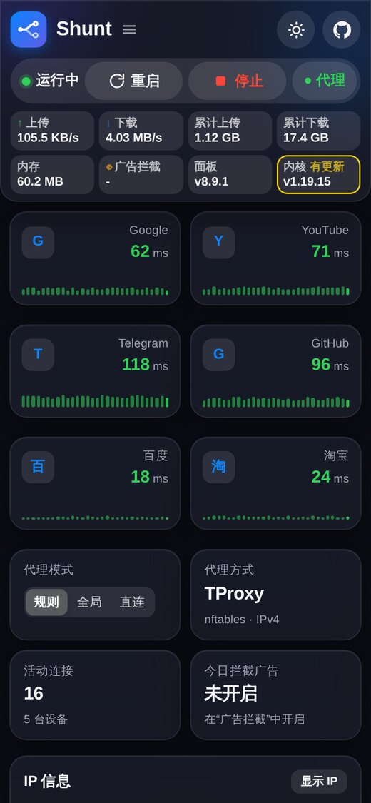

Shunt 分流
Alpine 旁路由一键透明代理 + Web 管理面板，支持 mihomo / mihomo Smart / sing-box（官方与魔改版）内核
1. 是什么 / 工作原理
Shunt 装在一台 Alpine Linux 旁路由（软路由、PVE / ESXi 虚拟机、LXC 容器、旧电脑、ARM 小板子都行）上。局域网设备把网关和 DNS 指向旁路由，流量就会按规则分流：国内直连、国外走代理节点。手机、电视、游戏机都不用逐台装客户端。
- 设备流量进入旁路由后，由 nftables 打标记转给内核（TProxy），或由内核的虚拟网卡接管（TUN）。
- 设备发往 53 端口的 DNS 查询被劫持到内核的
1053端口；Fake-IP 模式下设备拿到的是198.18.x.x虚拟地址，这是正常的。 - 内核（mihomo / mihomo Smart / sing-box）按规则和策略组选择直连还是哪个节点；面板负责生成配置、启停内核、测速、看门狗、日志和统计。




2. 版本与更新通道
| 通道 | 当前版本 | 发布分支 | 说明 |
|---|---|---|---|
| 正式版 | v9.2.5 | shunt（默认） | 测试过的稳定版本，有 Docker 镜像和离线包。9.2.5 在 9.2.4 基础上只加了「每天更新订阅」与「订阅自动更新」合并的修复。 |
| 预览版 | v9.2.7 | shunt-preview | 最新改动，版本号形如 9.2.7-preview.N+提交号。比正式版多出的功能见 第 18 节。没有单独的 Docker 镜像和离线包。 |
- 两个通道可以在面板里随时切换，不用重装，订阅和设置都保留（见 3.7 在线更新与切换通道）。
- 发布仓库另有
shunt-singbox/shunt-singbox-preview分支（只用 sing-box 的另一套面板），本文档说的是shunt系列。 - 本文档以代码为准；每一版的完整改动见 正式版 CHANGELOG 和 预览版 CHANGELOG。
3. 安装与更新
3.1 系统要求
- Alpine Linux（OpenRC）；用 root 执行安装。离线包按 Alpine 3.22 / 3.23 / 3.24 打包。
- CPU 架构：amd64（x86_64）/ arm64（aarch64）/ armv7（32 位 ARM 的限制见 3.5）。
- 内核模块：TProxy 需要
nft_tproxy，TUN 需要tun（/dev/net/tun），安装脚本会尝试加载。 - 端口 8080 / 7890 / 7893 / 1053 / 9090 不能被别的程序占用。
- Debian / Ubuntu（systemd，实验性）：install.sh 用 apt 装依赖、服务交给 systemd，面板里的启停、看门狗、在线更新照常可用；尚未在真机上充分测试，系统防火墙（ufw / firewalld）需自己放行，「系统优化」只支持 Alpine。其他发行版不支持。
3.2 一键安装（设备能联网）
在旁路由上用 root 执行。装完会打印面板地址（如 http://192.168.1.2:8080）。重复执行同一条命令就是覆盖升级，订阅和设置保留。
正式版：
# 国内网络（apk 换中科大镜像，GitHub 下载走 ghfast.top）
wget -qO- https://ghfast.top/https://raw.githubusercontent.com/Skycnhe/Shunt-release/shunt/install.sh | sh -s -- --cn
# 国外网络
wget -qO- https://raw.githubusercontent.com/Skycnhe/Shunt-release/shunt/install.sh | sh预览版（sh 前面要加 PANEL_BRANCH=shunt-preview，装完面板更新通道自动设为预览版）：
# 国内网络
wget -qO- https://ghfast.top/https://raw.githubusercontent.com/Skycnhe/Shunt-release/shunt-preview/install.sh | PANEL_BRANCH=shunt-preview sh -s -- --cn
# 国外网络
wget -qO- https://raw.githubusercontent.com/Skycnhe/Shunt-release/shunt-preview/install.sh | PANEL_BRANCH=shunt-preview sh也可以先装正式版，再在面板里切到预览通道，效果相同。
安装参数（放在 sh -s -- 后面，可组合；环境变量写在管道右边的 sh 前面）：
| 参数 / 环境变量 | 作用 |
|---|---|
--cn | 国内网络：apk 源换成 mirrors.ustc.edu.cn，GitHub 下载走 https://ghfast.top/ |
--update-core | 重新下载最新的 mihomo 内核（默认已装过就不重下） |
--https | 生成自签名证书，面板改用 https://（之后也能在设置里开关） |
--selftest | 安装后用真实内核校验多种配置场景 |
GH_PROXY=https://gh-proxy.com/ | 指定 GitHub 加速地址（覆盖 --cn 的默认值）；ghfast.top 打不开时换它 |
APK_MIRROR=mirrors.aliyun.com | --cn 时改用别的 apk 镜像 |
PANEL_BRANCH=<分支> | 指定从发布仓库的哪个分支安装（预览版用 shunt-preview） |
3.3 离线安装包
离线包含面板、mihomo / mihomo Smart / sing-box 三个内核、geo 数据、sing-box 规则集和全部 apk 依赖，只有 aarch64 / x86_64，按 Alpine 3.22 / 3.23 / 3.24 分别打包，每周自动重打一次，只跟正式版。
- 在旁路由上看架构和系统版本：
uname -m、cat /etc/alpine-release。 - 在电脑上打开 Releases · offline，下载对应的
shunt-offline-<架构>-alpine<版本>.tar.gz（同页的 SHA256SUMS 可用来校验）。 - 传到设备后执行：
tar xzf shunt-offline-*.tar.gz && sh shunt-offline/install.sh - 已安装的设备想用离线包升级内核：
sh shunt-offline/install.sh --update-core（旧内核留 .bak，面板里可回滚）。
设备能联网但直接装经常失败时，可以让脚本自己下载离线包：
# 国内网络
wget -qO- https://ghfast.top/https://raw.githubusercontent.com/Skycnhe/Shunt-release/shunt/offline.sh | sh -s -- --cn
# 国外网络
wget -qO- https://raw.githubusercontent.com/Skycnhe/Shunt-release/shunt/offline.sh | sh包的 Alpine 版本和本机不同时，依赖装不上会自动改为联网安装。预览版没有离线包：先离线装正式版，联网后在面板里切到预览通道。
3.4 Docker
只支持 Linux 宿主机 + host 网络（透明代理规则写在宿主机网络里）。镜像 skycn2022/shunt（Docker Hub）或 ghcr.io/skycnhe/shunt-release，架构 amd64 / arm64，只发布正式版，标签 latest、v<面板版本>，内置三个内核和 geo 数据。Docker Desktop（Windows / macOS）或 bridge 网络下透明代理不可用，只能用 7890 手动代理。
# 宿主机准备（容器和宿主机共用内核）
modprobe nft_tproxy; modprobe tun
sysctl -w net.ipv4.ip_forward=1
docker run -d --name shunt --restart unless-stopped --network host \
--cap-add NET_ADMIN --cap-add NET_RAW --device /dev/net/tun \
-v shunt-data:/data -e TZ=Asia/Shanghai --stop-timeout 30 \
skycn2022/shunt:latest- 数据全部在卷
shunt-data:/data，升级镜像不丢配置。升级：拉新镜像后重建容器。 - 8080 被占用时加
-e PANEL_PORT=8081（host 网络下-p端口映射不起作用）。 - Docker 会把宿主机 FORWARD 默认策略改成 DROP，局域网转发会被丢，需要放行，例如
iptables -I DOCKER-USER -i eth0 -j ACCEPT（eth0 换成连局域网的网卡）。 - 老内核（群晖等）TProxy 不可用时，在面板里把代理方式改成 TUN。
3.5 Alpine ARM 旁路由（ARM 小板子）
| 架构 | 一键安装 | 离线包 | Docker | sing-box 魔改版 |
|---|---|---|---|---|
| arm64（aarch64） | ✓ | ✓（aarch64） | ✓（arm64） | reF1nd 正式版 / reF1nd 预览版 / MiChongs 都可选 |
| armv7（32 位 ARM） | ✓ | ✗ | ✗ | 只能用 MiChongs |
- 32 位 ARM 只能用一键安装（命令同 3.2），安装脚本会下载 armv7 版 mihomo。
- reF1nd 只发 amd64 / arm64 的程序，所以在 armv7 上无论选哪个魔改版通道，面板都会下载 MiChongs 版（基于 reF1nd，只有预发布版）。
- MiChongs 版没有编译 gVisor：TUN 协议栈选了 gvisor / mixed 时面板会自动改成 system，建议直接用「默认」或 system（见 第 12 节）。
- 小板子 CPU 弱时，代理加密可能是瓶颈。预览版的「🩺 板子性能体检」能看出 CPU 是否打满、有没有 AES 硬件加速，并列出用 AES 加密的节点（见 第 18 节）。
3.6 首次进入面板
- 浏览器打开安装结束时打印的地址
http://旁路由IP:8080（用了 --https 则是 https://，证书提示不安全时选继续访问）。 - 默认没有密码、默认只允许局域网访问：来源必须是私有地址 / 本机 / 100.64.0.0/10（Tailscale / CGNAT）；地址栏必须是 IP、localhost 或 .lan / .local / .home / .home.arpa / .internal / .ts.net 等局域网域名，其他域名会显示「访问被拒绝」。
- 需要密码时：「设置 → 通知与安全 → 面板安全」填新密码 →「保存密码」。设置后打开面板要先登录（会话 30 天）。
# 命令行设置 / 查看 / 关闭面板密码（忘记密码时用 off）
python3 /opt/mihomo-panel/server.py --password 新密码
python3 /opt/mihomo-panel/server.py --password
python3 /opt/mihomo-panel/server.py --password off
# 改面板端口
echo 'PANEL_PORT=8081' > /etc/conf.d/shunt && rc-service shunt restart
# 允许用某个域名访问 / 允许非局域网来源访问（务必先设密码）
python3 /opt/mihomo-panel/server.py --allow-host nas.example.com
python3 /opt/mihomo-panel/server.py --allow-public on3.7 在线更新与切换通道
入口：设置 → 备份与更新 → 面板更新。
- （国内建议）在「GitHub 加速」框填加速地址，如
https://ghfast.top/；经常提示 403 rate limit 时，在「GitHub Token」框填一个不勾任何权限的 Token（每小时额度从 60 次提高到 5000 次，只发给 api.github.com，不进备份）。 - 在通道下拉里选 正式版 或 预览版。
- 点「检查更新」看有没有新版本，再点「立即更新」。文件先经代理下载、失败再直连；更新前自动校验并备份当前版本，新版启动失败会自动回滚。
- 从预览版切回正式版：下拉选「正式版」后点「立即更新」，就会装回正式版。
- 更新后有问题：点「回滚上一版本」，或在下方「版本备份」里恢复任一版本（见 第 15 节）。
- 校验方式：优先用 GitHub API 取文件校验值；API 限流或连不上时改用发布分支里的
SHA256SUMS；都拿不到时提示「未校验」，且只从 GitHub 直接下载、不走加速镜像。下载不完整或超过大小上限的文件不会被装上。出错时提示里写明是限流（及约几分钟后恢复）、代理 / 直连不通还是分支不存在。 - 命令行更新：重新执行 3.2 的安装命令即可（覆盖安装，数据保留）。
- 顶栏在面板或内核有新版本时会显示「有更新」按钮。
4. 快速上手
- 装好面板：按 第 3 节 安装，打开
http://旁路由IP:8080。 - 加订阅：「订阅」页 →「添加订阅」填名称和订阅链接 →「添加并应用」。
- 选节点：「节点」页点「全部测速」，在「🚀 节点选择」里选一个地区竞技组（自动用最快节点）或具体节点。
- 接设备：把设备（或主路由 DHCP 下发）的网关和 DNS 都改成旁路由 IP。不要在设备上手写 8.8.8.8 之类的 DNS。
- 验证：回到「概览」，站点延迟变绿、「当前出口」显示代理出口 IP 即可；有问题到「设置 → 网络 → 网络诊断」点「一键诊断」。
5. 面板布局与通用操作
- 页面：概览、节点、策略组、订阅、规则、广告拦截、DNS、连接、统计、日志、设置、WARP、拓扑、测速。设置页再分 网络 / 核心 / 通知与安全 / 备份与更新 / 外观 五组。
- 顶栏：核心运行状态，「启动 / 停止 / 重启」核心按钮，搜索。
- 命令面板：按
Ctrl K（Mac 为⌘K）或/，可跳转页面、搜索节点并切换、切换策略组、重载配置、启停核心、切换模式等，方向键选择、回车执行、Esc 关闭。 - 概览页：实时流量（近 5 分钟）、当前出口（出口 IP、本地公网 IP、带宽择优结果，可点「隐藏 IP」截图）、代理模式「规则 / 全局 / 直连」切换、地区延迟热力格（点一行跳到该地区节点）、🚀 节点选择、域名过滤统计、当前负载均衡小拓扑、看门狗状态、最近 100 条 DNS 查询结果。
- 保存即校验：大部分「保存并应用」都会先校验新配置，失败自动撤销；每次改设置前自动存一份配置快照（见第 15 节）。
- 界面：「设置 → 外观」可选界面语言（简体中文 / 繁體中文 / English）、界面布局（经典横向标签栏 / 抽屉菜单）、主题、背景图；这些大多只保存在当前浏览器。
6. 内核选择
| 内核 | 来源 | 特点 | 适合 |
|---|---|---|---|
| mihomo（默认） | MetaCubeX/mihomo，官方稳定版 / 预览版 | 规则、DNS 功能最全，有负载均衡（一致性哈希 / 轮询）和故障转移组 | 大多数人 |
| mihomo Smart | vernesong/mihomo，只有预览版 | 地区竞技组和「⚡ 全局自动选择」改为 smart 类型，按延迟、丢包、速度综合打分；可开 LightGBM 模型（约 9 MB，每 72 小时更新），内存占用更高 | 想要更聪明的自动选节点 |
| sing-box 官方稳定版 / 官方预览版 | SagerNet/sing-box | 没有负载均衡 / 故障转移出站：地区哈希、轮询组并入同地区竞技组，自定义的这两类组按自动测速运行 | 喜欢 sing-box、不需要多节点聚合 |
| sing-box 魔改版 reF1nd 正式版 / reF1nd 预览版 | reF1nd/sing-box-releases，只有 amd64 / arm64 | 有 loadbalance：哈希 / 轮询组按 loadbalance 运行（多节点聚合） | x86 / arm64 上要 sing-box + 负载均衡 |
| sing-box 魔改版 MiChongs 预览版 | MiChongs/sing-box，任意架构，只有预发布版 | 同样有 loadbalance；没编译 gVisor | 32 位 ARM 唯一的魔改版；其他架构也可手动选 |
6.1 切换内核
- 打开 设置 → 核心 → 内核。
- 在分段按钮里点要用的内核（mihomo / mihomo Smart / 已下载的各个 sing-box 版本），下方会列出这个内核与当前内核的差异和当前配置的兼容提示。
- 点「切换到 …」，确认后面板生成并校验新配置，通过后重启核心（局域网断网几秒）。30 秒内没响应会自动切回原内核。
订阅、节点、规则、DNS、设备等设置所有内核共用；mihomo / Smart 的配置写在 /etc/mihomo/config.yaml，sing-box 写在 /etc/sing-box/config.json，都由面板生成，不要手改。
6.2 下载、更新与回滚内核
同一张卡片下方的「已下载的内核」表列出每个内核（含各 sing-box 版本）的已下载版本和最新版本：
- 没下载的点「下载」；没在用的点「下载最新」；正在用的那一行点「更新」，新程序先校验能否运行、能否读当前配置，通过才替换并重启，30 秒内没响应自动换回旧版；「回滚」回到 .bak 旧版本。
- 「检查更新」查最新版本；「全部更新」只下载有新版本的、没在使用的内核；「清理旧内核」只保留正在用的内核（之后不能再一键回滚）。
- 勾选「自动更新已下载的内核」后每 12 小时检查一次，有新版本才下载；没用过的版本不下载。
- 正在用预发布 sing-box（如 alpha）时会显示「建议正式版」提示。版本号旁的标签写明是官方稳定版、官方预览版、魔改版 reF1nd 还是 MiChongs。
- 下载用「设置 → 备份与更新 → 面板更新」里填的 GitHub 加速地址。
6.3 协议栈与代理方式建议
- 首选 TProxy（默认）：性能最好，所有内核都适用。TProxy 不可用（老内核、群晖、部分 LXC）时再用 TUN。
- TUN 协议栈选「默认」：sing-box 1.15+ 不写 stack、用自有协议栈（推荐，最快最省），旧 sing-box 由内核自选；mihomo 的「默认」正式版 9.2.5 等同 mixed（TCP 走 system、UDP 走 gVisor），预览版 9.2.7 改为 system（ARM 小板上同节点实测 system 更快）。
- 没编译 gVisor 的内核（如 MiChongs）选了 gvisor / mixed 时，面板会自动改为 system，TUN 设置里会显示实际生效的协议栈。
- 开着 auto-redirect（默认开）时 TCP 由 nftables 直接重定向给内核，不经过协议栈，各协议栈的差别主要体现在 UDP / QUIC 上。
- 不确定哪个快：预览版测速页有「🧪 TUN 协议栈对比（手动）」引导，按步骤逐个试（见第 18 节）。
urltest_unified_delay 的魔改版会自动开启，口径和 mihomo 一致。7. 订阅
7.1 添加订阅
- 打开「订阅」页 →「添加订阅」卡片。
- 填名称（如 机场A）和订阅链接（Clash / Mihomo YAML 或 Base64 节点链接都可以）。
- 可选：「保留节点（正则）」只留想要的节点，如
港|日|新；「排除节点（正则）」去掉不要的。排除规则默认过滤「剩余流量 / 到期时间 / 官网」这类信息节点，清空表示不排除。 - 点「添加并应用」。订阅列表显示名称、节点数、过滤、流量（含已用百分比）、到期、更新时间；每行可「更新 / 测速 / 编辑 / 删除」。
面板账号登录（Xboard / V2Board）：同页填面板地址、邮箱、密码 →「登录并添加订阅」，之后更新订阅时自动用保存的 token 刷新订阅地址；密码只用来登录，不保存。登录过期时更新订阅会保留旧节点并提示重新登录。
手动导入单个节点：同页「手动导入单个节点」每行粘贴一个 vless:// vmess:// ss:// trojan:// hysteria2://（hy2://）tuic:// 链接 →「导入并应用」。导入的节点加入「🖐️ 手动选择」「⚡ 全局自动选择」和对应地区的竞技 / 负载均衡组。
7.2 自动更新与定时任务（合并后的行为）
有两个设置会更新订阅，它们共用同一个订阅任务：
| 设置 | 入口 | 默认 | 谁来执行 |
|---|---|---|---|
| 订阅自动更新间隔 | 设置 → 网络 → 订阅与分组（1 小时 / 6 小时 / 12 小时 / 24 小时 / 3 天） | 24 小时 | mihomo / Smart：内核按间隔自己更新；sing-box：面板下载 |
| 每天更新订阅 | 设置 → 核心 → 定时任务（填时间，留空不执行；「立即执行」马上跑一次） | 04:00 | 面板，按旁路由本机时区 |
- 同一轮只更新一次：两者同时到期时合并执行，只下载一次、只核对 / 重载一次核心，连接不会断两次；事件里显示「定时更新订阅 + 订阅自动更新（合并为一次）」。
- 30 分钟内已更新的跳过：定时任务到点时，30 分钟内刚成功更新过的订阅不重复拉取（sing-box 看面板缓存的更新时间，mihomo 看内核记录的 updatedAt）。手动「立即执行」和订阅页「更新」不受影响，照常拉取。
- 忙时推迟，不丢弃：定时 / 自动更新遇到另一次订阅更新正在进行时，推迟到下一轮（20 秒后）再试；手动更新遇到时等它完成（最多 4 分钟，超时会提示原因）。
- 失败重试：失败 10 分钟后只重试失败的订阅，最多 3 次；更新后恢复各选择组原来的选择。
- 核心重启时先等：核心正在重启 / 重载（如每天重启核心、看门狗、手动重启）时，先等它完成（最多 150 秒）再下载，被墙的订阅不会因此失败。
- 看结果：两个设置下方都显示上次运行时间、结果（✓ / ✗ 和消息、是否与另一个合并执行）、被推迟的原因与时间、正在进行的更新、失败重试的时间；面板重启后仍显示。mihomo 下还会注明自动更新由内核负责。
7.3 更新失败与删除节点
- 订阅更新失败时保留上次成功的节点，列表里显示失败和上次更新时间。
- 换了订阅链接（换机场 / 重置 token）：订阅行点「编辑」改链接，再点「更新」。
- 不想要某些订阅节点：「节点」页 →「订阅节点管理」→「选择节点删除」→ 勾选 →「从订阅删除」，订阅更新后也不会再出现；要恢复，到「订阅」页点「恢复」或「全部恢复」。
- sing-box 下订阅由面板下载并解析（Clash YAML / Base64 / 分享链接），ssr、snell、wireguard 节点会被跳过。
8. 节点与分组
8.1 节点页
- 排序与筛选：顶部「默认顺序 / 按延迟」「全部 / 只看正常 / 只看失效 / 含已隐藏」，「隐藏超时」一键藏起超时节点，搜索框按节点或分组名搜索。
- 显示：「卡片 / 列表」两种（按设备记住），「全部展开 / 全部收起」，点组标题展开 / 收起。
- 测速：「全部测速」测全部节点延迟；每个组标题也有「测速」。延迟色条 4 格：<150 ms 满格、<300 三格、<800 两格，超时打叉。
- 切换：点节点即切到该节点；自动测速 / 故障转移组里点选节点可「固定」（sing-box 的 URLTest 组不能手动固定）。
- 策略选择卡片：各分流组（🚀 节点选择、YouTube、Google、Telegram、AI、Netflix、漏网之鱼等）当前用的节点 / 分组，直接下拉切换；「管理策略组」跳到策略组页。
- 🚀 带宽择优卡片：定期实测各节点下载带宽，按「延迟修正后的带宽」打分，把最高分节点设为「🚀 带宽择优」组的选中。可「指定节点」只测这些节点（不选 = 全部参与）→「保存指定节点」；「立即测试」马上测一轮。周期与每轮上限在 设置 → 核心 → 定时任务 → 带宽择优 设置（每小时 / 2 / 4 / 12 小时，每个节点另起测试实例下载 10 秒或 32 MB，不影响正在跑的核心）。
8.2 自动生成的分组（策略组页 → 地区分组）
- 按节点名称识别地区，只为确实有节点的地区生成「🇯🇵 日本竞技」（url-test，每分钟测速，用延迟最低的）；节点 ≥2 的地区再生成「⚖️ 日本哈希」（一致性哈希，同一目标域名固定同一节点，会话稳定）。
- 可开「⚖️ 轮询」组：每条新连接换下一个节点，多线程下载（IDM、aria2、Steam、测速）可叠加带宽；登录类网站、银行、支付、游戏、视频不要用。不会自动改现有选择，需要手动在节点选择或分流组里选它。
- 「识别扩展地区」（韩国、英国、德国…）、「🌐 其他」分组（收纳没识别出地区的节点）、「懒惰测速（lazy）」（组没被使用时不做健康检查）。
- 测速间隔（1 分钟 … 1 小时，默认 1 分钟）、容差（默认 50 ms，新节点快过当前节点超过该值才切换，0 = 谁最快用谁）、测速地址（默认 gstatic generate_204）。
- LightGBM 模型开关（仅 mihomo Smart）和「更新模型」。
- 改完点「保存并应用」（先校验，失败自动撤销）。
- 「已识别的地区」卡片列出各地区节点数和生成的分组；订阅更新后每 10 分钟自动重新识别，也可点「按订阅重新识别」。
- 「🚀 节点选择」只包含：各地区竞技 → 各地区负载均衡 → 🖐️ 手动选择 → ⚡ 全局自动选择 → 🏠 直连。
8.3 自定义策略组
- 「策略组」页 →「自定义策略组」→「＋ 新建策略组」。
- 填名称（如 🎮 游戏加速）、可选图标 URL，选类型：手动选择 / 自动测速 / 故障转移 / 负载均衡（负载均衡再选一致性哈希或轮询）。可单独设测速间隔和容差。
- 故障转移类型可勾「主备优先」（新建时默认勾上）：成员顺序就是优先级，主用不通才切备用，主用恢复再切回。mihomo 下是 fallback 组；sing-box 下由面板按测速间隔探测成员并切换，不重启内核。
- 添加成员：搜索节点 / 分组点击加入（按顺序）；也可勾选订阅节点，或填正则（如
(?i)美国|US|日本）筛选全部节点追加在成员之后；「包含订阅节点」控制是否带上订阅节点。 - 「加入分流组候选」：打开后这个组出现在 YouTube / Google / Telegram / AI / Netflix / 漏网之鱼的下拉里（不再加入 🚀 节点选择；开启时不能再引用这些分流组，但可引用 🚀 节点选择）。
- 点「保存并应用」。列表里每个组可「编辑 / 删除」，并显示被哪里引用。
自定义组可在自定义规则、规则集、DNS（写 #组名）里引用。
8.4 WARP 与链式代理（WARP 页）
- ☁️ Cloudflare WARP：「注册新账号」或「导入配置」（填端点、私钥等）生成名为 WARP 的 WireGuard 手动节点，可像普通节点一样用；可「修改配置 / 重新加入节点 / 删除」。
- 🎯 本地优选 IP：「开始优选」对 WARP 端点发真实握手测延迟和丢包，选中后「替换端点」；也可填只测哪些端点。
- 🔗 链式代理 / 落地：添加 SOCKS5 / HTTP / HTTPS 出口（可批量粘贴
socks5://用户:密码@地址:端口#名称或地址:端口:用户:密码；HTTPS 可填 SNI、跳过证书校验），选「前置节点」（节点、地区竞技组、全局自动或自定义组）→「添加」。流量走「设备 → 前置 → 出口 → 网站」，建好后是一个普通节点；「检测」/「检测全部」看出口 IP、归属和延迟。
8.5 拓扑页
「🕸️ 负载均衡拓扑」以每个负载均衡组为中心连向成员节点：连线越粗连接越多，蓝框为正在使用，灰色为健康检查失败被剔除；点组名展开 / 收起，页面打开时每 2 秒刷新。
10. 规则与广告拦截
10.1 规则页
- 规则测试：输入域名或 IP（如 chatgpt.com）点「测试」，看命中哪条规则、走哪个组；「真实路由验证」实际发请求对照。规则不生效时先在这里查。
- 自定义规则（优先于内置规则）：选类型（DOMAIN-SUFFIX / DOMAIN / DOMAIN-KEYWORD / GEOSITE / IP-CIDR / GEOIP / SRC-IP-CIDR / DST-PORT / PROCESS-NAME）、填内容、选策略 →「添加」；或在批量框每行一条（不写目标策略默认 🚀 节点选择）→「保存批量规则」。
- 规则集订阅（rule-providers）：快速添加 广告拦截 / OpenAI / Apple 直连 / 微软直连 / Steam，或填名称、链接、behavior（domain / ipcidr / classical）、格式（yaml / text / mrs）→「添加」。
- 切换不断连（默认关）：打开后每个规则集可在「原目标 / 直连 / 拒绝」之间切换，只改写开关规则集文件、内核不重启，已建立的连接不断；关着时切换会重新生成配置（mihomo 热重载，sing-box 重启）。
- 当前生效规则：列出最终配置里的全部规则，可搜索。
10.2 广告拦截页
- 「过滤列表」：点内置规则添加，或填名称和链接添加 AdGuard / ABP、hosts、纯域名、Clash 规则格式的列表；每个列表可启用 / 停用。「自动更新」可选不自动 / 6 小时 / 12 小时 / 每天 / 3 天 / 每周，「立即更新全部」马上刷新（只刷新规则文件，不中断连接）。
- 「DNS 层拦截」：命中的域名直接返回 NXDOMAIN（这部分不计入「今日拦截」）。
- 「检测域名」查某域名是否被拦；「今日拦截排行」从核心日志统计，保留 14 天。
- 「自定义规则」：黑名单（全部 / 只拦国内直连 / 只拦国外代理）、白名单（总是放行，优先，接受
@@||example.com^）→「保存并应用」。
11. DNS
入口：「DNS」页。改完点「保存 DNS 设置」（先校验，失败自动撤销）；「恢复默认」回到默认设置。
- 增强模式：fake-ip（推荐，防泄露，客户端只拿到 198.18.x.x）或 redir-host（返回真实 IP）。
- 国内域名走直连 DNS：geosite:cn,private 走直连 DNS，其余（含未知域名）全部走代理 DNS。
- respect-rules：DNS 查询连接也遵循分流规则；节点域名用「节点域名解析」DNS。
- 阻止客户端绕过 DNS：拒绝局域网设备直连 DoT / DoQ（853）和常见公共 DoH，迫使浏览器 / 手机回落到旁路由 DNS。
- 缓存算法 ARC / LRU；上游格式：IP、udp:// tcp:// tls:// https:// quic:// dhcp://、system，可加
#策略组指定走哪个组。 - DNS 泄露检测：「开始检测」检查配置并经代理在线测实际上游（出现国内解析器即泄露）；「一键应用防泄露设置」。
- Hosts 静态解析：「＋ 添加」域名 → IP（或别名域名），支持
+.example.com、*.example.com。 - DNS 分流策略（nameserver-policy）：「＋ 添加」指定域名用哪组 DNS，如
geosite:apple,microsoft@cn、+.corp.example、rule-set:名称。 - DNS 查询：输入域名、选类型（A / AAAA / CNAME / HTTPS / MX / TXT / NS）→「查询」，结果是真实上游结果；「清空 DNS 缓存」。
12. 代理方式与 TUN 设置
入口：设置 → 网络 → 代理方式。
- 选 TProxy（默认，nftables 把流量转到 7893，性能最好，需要 nft_tproxy）、TUN（虚拟网卡接管，TProxy 不可用时用）或 关闭（不做透明代理，只能手动用 7890）。
- 选 TUN 后展开「TUN 选项」：
- 协议栈：默认 / system / gvisor / mixed（建议见 6.3）。
- 网卡名称（默认 Meta）。
- auto-redirect（默认开）：用 nftables 重定向 TCP，旁路由性能更好；内核不支持时自动关闭。
- strict-route（默认关）：严格路由防绕过，可能影响局域网访问。
- TUN MTU（默认 9000，个别网络可降到 1280–9000）。
- QUIC 屏蔽（默认开）：拦截走代理的 QUIC（UDP 443），浏览器自动退回 TCP；直连站点不受影响。
- MSS 钳制（默认关）：MTU 不对称的链路不再丢大包。
- 多队列 multi_queue：仅预览版 9.2.7，见第 18 节。
- 点「应用 TUN 设置」（内核会重启，局域网断开几秒）。auto-route、auto-detect-interface 自动开启，DNS 劫持 any:53。
- IPv6 透明代理（同卡片）：核心与 DNS 启用 IPv6 并代理 IPv6 流量，需客户端以旁路由作 IPv6 网关。
- 故障自动直连（看门狗）（同卡片，默认开）：每 30 秒检查核心，无响应自动重启；连续 2 次失败则关闭透明代理让局域网直连，核心恢复后自动重新接管。手动停掉的核心不会被拉起。
- 绕过设备（不走代理）（设置 → 网络）：每行一个 IP、网段或 MAC →「保存」。TUN 下按 IP / 网段生成直连规则（MAC 只在 TProxy 有效）；被绕过的设备 DNS 请设为主路由。
- 直连不进内核（入口旁路）（设置 → 网络，默认关，只在 TProxy 生效）：打开「启用入口旁路」并勾选集合（中国大陆 IP〔只在 Fake-IP 下〕/ 节点服务器地址 / 自定义直连 IP 规则），直连连接在 nftables 入口直接放行，更快更省 CPU；卡片显示各集合条数和是否生效，「重新生成集合」立即重建。放行的连接在连接页和统计里看不到。同卡片「关闭连接时清理连接跟踪」需要 conntrack 命令（
apk add conntrack-tools）。
13. 测速
入口：「测速」页。
- 「🇨🇳 国内测速 · 直连」：12 条连接同时下载腾讯 / 360 的 CDN；「🌏 国外测速 · 经代理」：经当前代理 4 条连接下载 Cloudflare。各测 10 秒，点卡片上的「测速」或顶部「全部测速」。会消耗流量（每 100M 宽带约 120 MB）。
- 卡片下方显示最近 12 次成功测速的趋势线和最低 / 平均 / 最高；「测速记录」表列出时间、类型、下载、峰值、延迟、下载源（保存最近 30 次）。
- 节点延迟测速在「节点」页（见 8.1）；定时测速在 设置 → 核心 → 定时任务「节点自动测速」（关闭 / 每 10 分钟 / 30 分钟 / 每小时 / 3 小时）。
- 节点健康检查（设置 → 核心 → 定时任务）：每天定时测全部节点，连续失败 N 天标红、M 天自动隐藏；「立即检查」马上跑一次。隐藏的节点在节点页「含已隐藏」里可「取消隐藏」。
- 系统优化卡片里另有「下载测速」（Cloudflare 最多 50 MB / 10 秒，直连 / 经代理），用来对比优化前后。
- 预览版在本页另有「🩺 板子性能体检」和「🧪 TUN 协议栈对比（手动）」，见第 18 节。
14. 连接与统计
14.1 连接页
- 实时列出每个连接的主机、来源设备、网络（TCP / UDP）、命中规则、链路、上下行速度、下载量、时长；顶部汇总活动连接、设备数、合计速率。
- 点表头排序；搜索框按域名 / IP / 设备 / 规则 / 节点过滤；勾「暂停」冻结列表；每行可关闭单个连接，「断开全部」关闭所有连接。超过 300 条只显示前 300 条。
14.2 统计页
- 概要：今日合计、本月合计、近 30 天日均、近 30 天峰值日。
- 「每日流量（近 30 天）」图：悬停 / 点按看当天下载、上传、合计；「刷新」。
- 「明细」：切「今日 / 本月」，按设备（点 ✎ 设置备注）和按节点列出上传、下载、合计、占比。
- 每 5 秒采样一次连接，数据保留 60 天；单位按 1024 进制。存活不足 5 秒的短连接可能计入总量但不计入明细。
- 设备名来自「设置 → 网络 → 设备备注」（每行
IP 或 MAC = 名称），没备注的依次尝试 DHCP 租约、/etc/hosts、反向解析。 - 预览版另有「📱 设备实时流量」卡片，见第 18 节。
15. 配置快照与备份
入口：设置 → 备份与更新。三种机制别弄混：
| 机制 | 什么时候产生 | 怎么恢复 |
|---|---|---|
| 配置快照 | 每次修改设置前自动保存上一版设置，最近 10 份（不含密码） | 在「配置快照」列表里点某一份的「恢复」（经同样的校验和重载）；「刷新」更新列表。预览版另有「↩ 回到上一份」 |
| 备份 / 恢复 | 自己点「下载备份」 | 「从文件恢复…」选备份文件。备份含订阅链接、手动节点、广告拦截与 DNS 设置和 Telegram Token，请妥善保管 |
| 版本备份 | 面板在线更新前自动备份当前版本（带版本号），也可点「立即备份」；只保留最近 10 个 | 点某个版本的「恢复」，面板自动重启；不要的可「删除」。也可用「面板更新」里的「回滚上一版本」 |
- 换设备、重装系统前，先「下载备份」存到电脑。
- 命令行手动备份全部设置：
tar czf /root/shunt-backup-$(date +%F).tar.gz /etc/mihomo-panel - 内核更新时旧程序保留为
/usr/local/bin/<内核>.bak，可在「已下载的内核」里「回滚」。 - 预览版的快照与版本备份另有容量上限，见第 18 节。
16. 日志
- 入口：「日志」页。「实时」看内核实时日志流，「日志文件」看核心日志文件最近 300 行（「刷新」重读）。
- 级别下拉 debug / info / warning / error；关键字过滤框；勾「暂停」停止滚动；「清空」清掉当前显示。工具栏下方显示缓冲区里错误 / 警告 / 信息 / 调试的行数。
- 30 秒内重复的「missing fakeip record」合并成一行并计数；内核重启期间只显示「内核未运行或正在重启，等待恢复…」。
- 日志清理：设置 → 核心 → 日志清理，选上限 1M / 2M / 5M（默认）/ 10M / 20M，超过时自动截断只留最后 200 行（每分钟检查）；「立即清理」。
- 命令行：
tail -n 100 /var/log/mihomo-panel.log（面板日志，反馈问题时请附上）、tail -n 100 /var/log/mihomo.log（内核日志，上次运行末尾在 mihomo.log.prev）。
17. 其他设置与工具
- 流媒体 / AI 解锁检测（设置 → 网络）：点「检测」（约 10 秒），按当前规则分流检测出口位置、Netflix、ChatGPT、Disney+、YouTube Premium、Gemini、Google 定位。
- 系统优化（设置 → 网络）：针对旁路由调优内核网络参数（数值按本机内存和 CPU 计算），「选推荐项」→「应用」，开机自动生效；「全部恢复」还原原值。PVE LXC / Docker 容器里开不了的项显示「由宿主机控制」并给出宿主机命令。
- 网络诊断（设置 → 网络）：「一键诊断」检查核心、透明代理 / TUN、IP 转发、DNS 解析与出站连通性，并给出修复建议。
- 核心服务（设置 → 核心）：「重载配置」「更新 GEO 数据库」「清空 Fake-IP 缓存」，域名嗅探（sniffer，推荐开），「生成的配置文件」可「查看 / 下载」（控制器密钥已隐藏）。启动 / 停止 / 重启在顶栏。
- 定时任务（设置 → 核心）：每天更新订阅、每天重启核心、每天更新 GEO 数据库、节点自动测速、节点健康检查、带宽择优；改完点「保存」，每项可「立即执行」。按旁路由本机时区执行。
- 延迟检测站点（设置 → 核心）：每行「名称|网址」，概览的站点延迟卡片用它（默认 Google、YouTube、Telegram、GitHub、百度、淘宝）。
- 面板安全（设置 → 通知与安全）：HTTPS（自签名证书）开关；面板密码（当前密码 / 新密码 / 再输一次 →「保存密码」；「关闭密码」「退出登录」）。脚本调用接口要加请求头
X-Shunt: 1，设了密码再加X-Shunt-Auth: 密码。 - Telegram 通知（设置 → 通知与安全）：先找 @BotFather 建机器人、给它发一条消息、用 @userinfobot 查 chat id，填 Bot Token 和 Chat ID →「发送测试」→「保存」。看门狗事件、节点全部超时、订阅 3 天内到期或流量超 90% 时推送，同一状态只提醒一次。
- 背景图（设置 → 外观）：上传图片或「使用图片链接」，图片由路由器保存、所有设备共用；可设每天自动更新、模糊、遮罩。
18. 预览版专属功能（仅预览版 9.2.7）
shunt-preview）里有，正式版 9.2.5 没有。切到预览版见 3.7。这些功能都是只读或默认关闭的；除了 mihomo 选「默认」协议栈的用户（见 18.6），生成的配置与正式版相同。18.1 🩺 板子性能体检（测速页）
- 打开「测速」页，找到「🩺 板子性能体检」卡片，点「体检」看一次。
- 点上面的「测速」时，卡片会边测边每 1.5 秒自动刷新。
- 显示：内核进程 CPU 占用（单核百分比，标出满载是几核 × 100%）、整机 CPU 与最忙的一个核、CPU 核数和型号、有没有 AES 硬件加速、主网口（默认路由网卡）的协商速率和实时收发速率。
- 瓶颈判断：网口封顶（收或发达到协商速率的 85%）/ CPU 打满 / 单核打满（多核板子上某个核 ≥95%，建议开 RPS）/ 瓶颈在节点或线路 / 暂无负载。
- 全部只读，不改任何设置；读不到的项显示「未知」。
18.2 AES 加密提示（同一张卡片）
- CPU 没有 AES 加速时（很多 32 位 ARM、没开 Crypto 扩展的 A53 / A72 小板），卡片下方列出手动节点和订阅里显式用 AES 加密的 Shadowsocks / VMess 节点（含 SS 2022 的 2022-blake3-aes-*-gcm）。
- 建议让服务端换成 chacha20-ietf-poly1305 / 2022-blake3-chacha20-poly1305 或 VLESS Reality。只提示，不改任何节点；有 AES 加速时不列。TLS / Reality / QUIC 类节点和 VMess「auto」不列。
18.3 🧪 TUN 协议栈对比（手动，测速页）
- 先在 设置 → 网络 → 代理方式 选 TUN（协议栈只在 TUN 下起作用）。
- 打开「测速」页「🧪 TUN 协议栈对比（手动）」，点「刷新」，卡片列出当前内核可选的协议栈。
- 挑一台局域网设备，在「节点」页把策略组手动固定到同一个节点，关掉其他大流量。
- 到 设置 → 网络 → TUN 选项 → 协议栈 依次切换，每次点「应用 TUN 设置」（内核重启，断网几秒）。
- 每切一次，在那台设备上用同一个测速网站测 2～3 次取平均，同时看「体检」CPU 有没有打满。
- 比完把协议栈改回你想用的。
为什么不做成一键自动对比：每切一次都要重启内核、局域网断网；面板自己的测速经 7890 端口走代理，不经过 TUN 协议栈；auto-redirect 开着时 TCP 也不经过协议栈。所以只做手动引导。
18.4 📱 设备实时流量（统计页）
- 「统计」页「📱 设备实时流量」按来源设备汇总内核当前的连接：设备名（备注 / DHCP / hosts / 反向解析）、连接数、实时下载 / 上传速率、这些连接累计的流量、正在用的节点（悬停看全部）。
- 每 3 秒自动刷新，也可点「刷新」；离开页面或浏览器切到后台时停止。最多列 200 个设备；内核没运行时显示提示。
18.5 🔁 故障切换记录（节点页，只保留最新 5 条）
- 「节点」页「🔁 故障切换记录」：面板每 30 秒读一次各组状态，只记录、不切换。组的当前节点变了记「切换」（注明原因），节点连续 3 次测速失败记「连续失败」，之后恢复记「恢复」；「主备优先」组的切换也记一条。手动选择组的变化不记，全节点测速期间不记，内核重启 / 切换内核后重新建基线。
- 只保留最新 5 条（9.2.7 起），新事件挤掉更早的；面板重启后照常显示。旧预览版存了更多条时，第一次读取会自动裁剪到 5 条。
- 「刷新」重读，「清空」清除全部记录。
18.6 mihomo TUN「默认」协议栈改为 system
mihomo / Smart 的 TUN 协议栈「默认」从 mixed 改为 system。只影响选「默认」的用户；显式选了 mixed / gvisor 的照旧。sing-box 不变。
18.7 sing-box TUN 多队列 multi_queue
- 切到 sing-box 内核、代理方式选 TUN、协议栈选「默认」。
- 设置 → 网络 → TUN 选项 → 打开「多队列 multi_queue」→「应用 TUN 设置」。
打开后 TUN 入站写 multi_queue: true，吞吐随 CPU 核数增加。默认关；只在 Linux 3.8+、多核、sing-box 1.15+ 且协议栈为「默认」时生效。单核设备、旧内核、mihomo 下开关禁用或隐藏并写明原因。
18.8 配置快照「↩ 回到上一份」与容量上限
- 设置 → 备份与更新 →「配置快照」卡片的「↩ 回到上一份」：恢复最近一次修改之前的设置（同样校验和重载）。恢复前的设置会记成新快照，再点一次就是重做。
- 配置快照合计不超过 4 MB（从最旧的丢起，至少留 1 份）。
- 版本备份合计不超过 48 MB（从最旧的删起，最新一份和正要恢复的那份始终保留）；存储剩余不足 24 MB 时跳过自动备份并说明，避免写满小板子的存储。
19. 常见问题与排错
先到「设置 → 网络 → 网络诊断」点「一键诊断」，再看「日志」页。
| 现象 | 处理 |
|---|---|
| 安装时下载失败、raw.githubusercontent.com 打不开 | 用 --cn 版命令；还不行把加速地址换成 https://gh-proxy.com/，或加 GH_PROXY=... |
| 在线更新 / 内核更新失败，提示 403 rate limit | 「面板更新」里填 GitHub 加速地址和不勾权限的 GitHub Token；或重新执行安装命令覆盖更新（设置保留） |
| 预览通道提示没有可用版本 | 看提示里写的原因（限流 / 网络 / 分支）；9.2.1 及更早的面板用 3.2 的预览版安装命令覆盖安装一次 |
| 打开面板显示「访问被拒绝」 | 不是从局域网访问或用了非局域网域名：改用 IP，或用 --allow-host / --allow-public（见 3.6） |
| 打不开面板 | 确认端口（cat /etc/conf.d/shunt）和 rc-service shunt status；8080 被占用时改 PANEL_PORT |
rc-service shunt status 显示 crashed | 先看 /var/log/mihomo-panel.log，再 rc-service shunt zap && rc-service shunt start（内核同理用 shunt-core） |
| 设备设了网关却上不了网 | 确认设备 DNS 也指向旁路由；TProxy 不可用时改 TUN；看门狗切直连后核心恢复会自动接管 |
| 节点全部超时 | 看日志有没有拨号超时；换地区或换节点；先把概览的代理模式切到「直连」保证家里不断网 |
| 规则不生效 / 网站走错节点 | 「规则」页规则测试；检查设备是否用了自己的 DNS 或浏览器安全 DNS（可开「阻止客户端绕过 DNS」） |
| 日志刷 missing fakeip record | 内核重启或清空 Fake-IP 缓存后客户端还拿着旧地址，一般几分钟内自愈；可在「核心服务」清空 Fake-IP 缓存 |
| 内核起不来 / 反复重启 | 看 /var/log/mihomo.log 和 .prev；检查 7890 / 7893 / 1053 / 9090 是否被占用；在「已下载的内核」里回滚 |
| 订阅更新失败，节点会丢吗 | 不会，保留上次成功的节点；定时 / 自动更新失败 10 分钟后只重试失败的订阅（最多 3 次） |
| 定时任务到点了却没拉订阅 | 30 分钟内刚成功更新过的订阅会跳过；正在进行别的订阅更新时会推迟 20 秒；看「每天更新订阅」下方的上次结果与推迟原因 |
| 手动更新订阅提示正在更新 | 另一次订阅更新正在进行，手动更新会等它最多 4 分钟；超时稍后再点 |
| 32 位 ARM 上魔改版 sing-box 是 MiChongs | 正常：reF1nd 不发 armv7 程序，所有魔改通道在 armv7 都用 MiChongs |
| TUN 协议栈选了 gvisor 却显示 system | 当前内核没编译 gVisor（如 MiChongs），面板自动改用 system |
| 两个内核测出的延迟不一样 | 口径不同：sing-box 官方版把握手都算进延迟；魔改版自动开 urltest_unified_delay 后与 mihomo 一致 |
| 面板更新后出问题 | 「面板更新」点「回滚上一版本」或在「版本备份」恢复 |
| 忘记面板密码 | python3 /opt/mihomo-panel/server.py --password off |
20. 端口、文件与命令
| 组件 | 端口 / 路径 | 说明 |
|---|---|---|
| 面板网页 | 8080 | 服务名 shunt，可用 PANEL_PORT 改 |
| HTTP / SOCKS5 混合代理 | 7890 | 不走透明代理的设备可手动设 旁路由IP:7890 |
| TProxy 入口 | 7893 | tproxy.sh 把局域网流量转到这里 |
| 内核 DNS | 1053 | 局域网 53 端口查询被重定向到这里 |
| 内核控制接口 | 127.0.0.1:9090 | 只监听本机 |
| 内核程序 | /usr/local/bin/mihomo、mihomo-smart、sing-box | 服务名 shunt-core |
| 面板程序 | /opt/mihomo-panel/ | server.py、index.html、tproxy.sh 等 |
| 面板数据 | /etc/mihomo-panel/ | 订阅、节点、规则、设置（data.json） |
| 生成的内核配置 | /etc/mihomo/config.yaml、/etc/sing-box/config.json | 面板自动生成，不要手改 |
| 日志 | /var/log/mihomo-panel.log、/var/log/mihomo.log | 面板 / 内核 |
rc-service shunt restart # 重启面板
rc-service shunt-core restart # 重启代理内核
rc-service shunt status; rc-service shunt-core status
/opt/mihomo-panel/tproxy.sh stop # 临时关闭透明代理（apply 恢复）21. 卸载
先把设备（或主路由 DHCP）的网关和 DNS 改回主路由；用过「系统优化」的先在面板里点「全部恢复」。然后在旁路由执行：
rc-service shunt stop; rc-service shunt-core stop # 停止时会撤掉透明代理规则
rc-update del shunt default; rc-update del shunt-core default
rm -f /etc/init.d/shunt /etc/init.d/shunt-core /etc/conf.d/shunt /etc/conf.d/shunt-core
rm -rf /opt/mihomo-panel /etc/mihomo-panel /etc/mihomo /etc/sing-box
rm -f /usr/local/bin/mihomo /usr/local/bin/mihomo-smart /usr/local/bin/sing-box \
/usr/local/bin/mihomo.bak /usr/local/bin/mihomo-smart.bak /usr/local/bin/sing-box.bak
rm -f /etc/sysctl.d/99-mihomo-panel.conf /var/log/mihomo*.log* /var/log/shunt-core-hang.log
nft delete table inet mihomo_panel 2>/dev/null; true/etc/mihomo-panel 里是全部设置，想保留请先备份。Docker 安装的卸载：docker rm -f shunt && docker volume rm shunt-data。